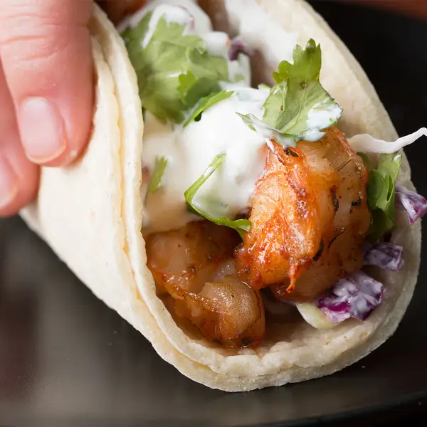
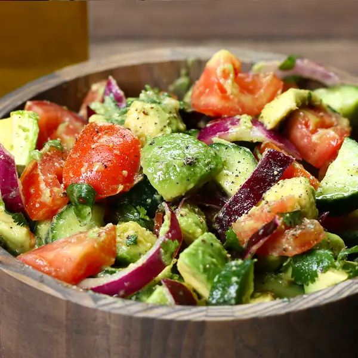
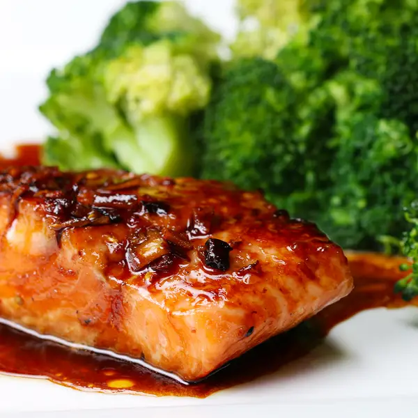

DISH

Beef and Broccoli Noodle Stir fry
Chinese Chicken Fried Rice
Classic Chicken Noodle Soup
Creamy Lemon Chicken
Cucumber Tomato Avocado Salad
Grilled Shrimp Tacos
Honey Soy Glazed Salmon
Mushroom Stroganoff
Potato Souppotato Soup